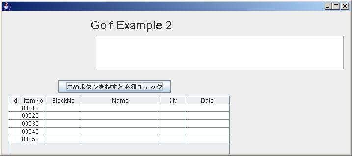
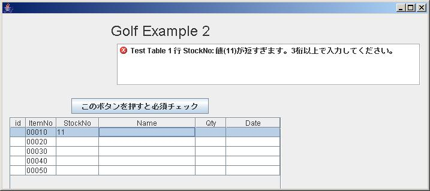
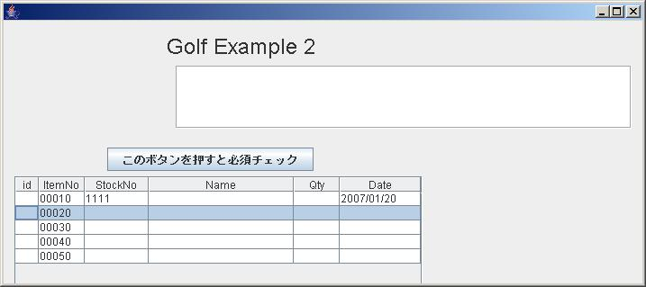
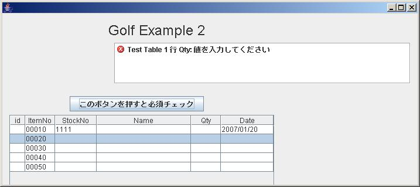
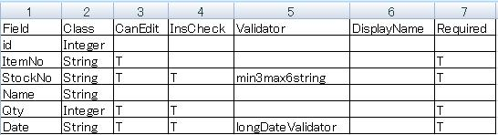
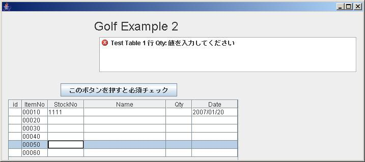
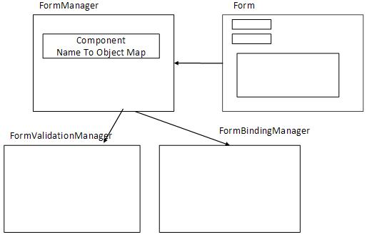

-
- それでは、Example ２を見てみましょう。Launcher画面のExample ２を押すと下記画面が表示されます。

-
この画面の想定は、Item Noが自動的に１０番毎に振られており、ユーザーはこれを変更する事により、
表示順を制御できます。
idは、Databaseで自動的にふられますので、本来はユーザーに見せる必要はありません。
それでは、Stock No欄に「１１」と入力して、TAB キーか、次のFieldをクリックして、入力を終了
させて下さい。すぐに下記の様に、エラー表示がされます。このFieldも「min3max6string」
すなわち、文字列の３桁～６桁が有効かチェックするValidatorがSetされていますので、２桁ではエラーとなります。

-
それでは、Stock No欄を「１１１１」と入力して、エラーを回避して、つぎにDate欄に
「07/1/20」と入れて見ましょう。「2007/01/20」と表示が変わります。これはこの欄に
「longDateValidator」（YYYY/MM/DD）がSetされているからです。

-
それでは、ここで「このボタンを押すと・・・・」のボタンを押してみましょう。
Example １と同様、必須 Checkが掛かります。

-
これは、Qty欄がRequired項目 （ItemNo,StockNO,DateもRequired項目です）と定義されているからです。
尚、２行目から５行目には、ItemNoがSetされていますが、エラーとなっていません。
これは、ItemNo,StockNO,Qty,Dateのどれか一つでも入力されている行を有効な行とみなす設定がされて
いるからです。
また、id欄やName欄は入力出来ない設定になっています。
ここまでの、設定はすべて下記のCSV Fileにて、定義されています。

- FieldがColumn名、Classが Field属性（golf.properties Fileで、実際のClass名に変換しています）、
CanEditで、編集可能属性の定義、InsCheckで有効行の判定項目の指定、Validatorの指定、
DisplayNameでエラー表示時の表示名の設定、Requiredで必須項目の設定を行います。
それでは、一番下の行のStockNoをクリックして、入力モードにして下さい。

-
00060行が自動的に追加されましたね。最下行をクリックするか、入力すると自動的に次の行が
追加される様にしています。（勿論 表示のみの場合はこの機能をDisableする事は簡単です）
またItemNo欄は、既に表示されているItemNOの最大値に増分値を加える様になっています。
これを変更して、Item Noを１づつ増加させたり、または空行を追加するのも簡単に行えます。
それでは、Programを見てみましょう。
（Matisseで自動作成分を除く）
public class Example2Frame extends javax.swing.JFrame implements GolfFormInterface {
private FormManager formManager = null;
private GolfTableModel golfTableModel= new GolfTableModel();
public void initBinding(HashMap params) {
formManager = new FormManager(this);
formManager.init();
formManager.createReportList(jScrollPane1);
jTable1.setSelectionMode(ListSelectionModel.SINGLE_SELECTION);
formManager.setTableColumnFromCsvResource(
jTable1, "Test Table", golfTableModel, "Example2_table1.csv");
for (int i=0; i < 5; i++) {
addNewRow();
}
TableUtil.SetPreferedColumnWIdth(jTable1, new int[]{15,40,60,150,40,80 });
}
private void jTable1MouseClicked(java.awt.event.MouseEvent evt) {
addNewRowWhenCursorLastRow();
}
private void jTable1KeyPressed(java.awt.event.KeyEvent evt) {
if (TableUtil.checkRowDownEvent(evt)) {
addNewRowWhenCursorLastRow();
}
}
private void jButton1ActionPerformed(java.awt.event.ActionEvent evt) {
formManager.getFormValidationManager().Validate(true);
}
public FormManager getFormManager() {
return formManager;
}
public JMenuBar getMenu() {
return null;
}
public JPanel getContentPanel() {
return null;
}
private void addNewRow() {
TableUtil.addNewRowWithItemNo (golfTableModel,1,10,5);
}
private void addNewRowWhenCursorLastRow() {
if (jTable1.getSelectedRow() == jTable1.getRowCount() -1) {
addNewRow();
}
}
public void processAction(HashMap params) {
}
public void setFormManger(FormManager formManager) {
this.formManager = formManager;
}
}
- Example １と同様「赤」の部分のみが、手で入力しなければならない項目で、大変すくなくなっています。
また「青」の部分は、GolfInterfaceをImplementsすれば、Netbeansが自動的に作成します。
なお、FormのControl,Validation、Bindingで使う Classの関係は以下の通りとなっています。（参照を保有）

- また、JTableのModelとしては、GolfTableModelを使用する事により、BindingとValidationの機能が
使用できます。
それでは、次のExampleで、TableとFieldの連動機能を見てみましょう。
- Example ３へのリンク
- GOLF HOMEへのリンク
|